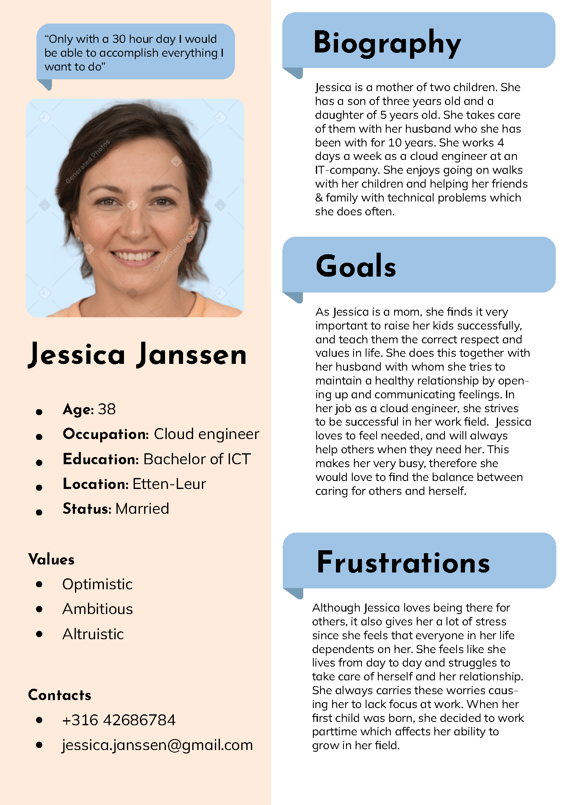
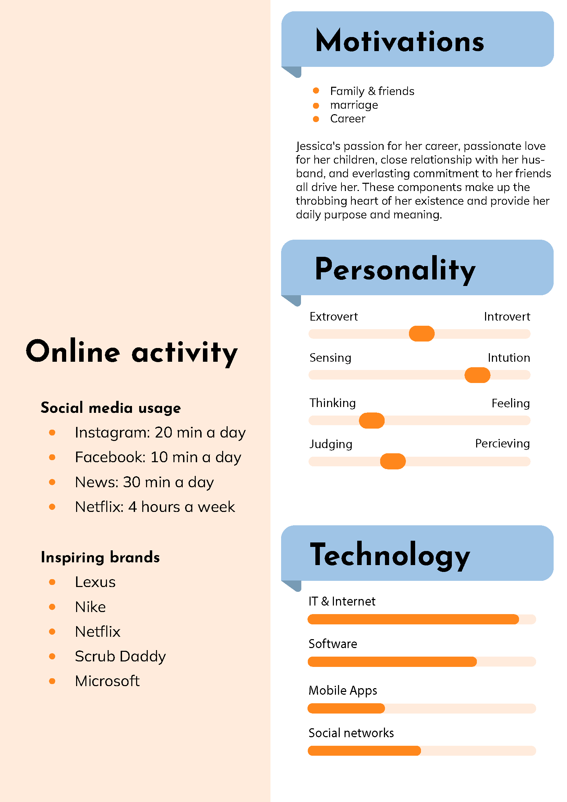

General Information
This branded website is publicly available at buas-media-interactive.github.io/my-website
This website was created by…
- Nienke Overbeek (Student ID: 213484)
- Julia Hinten (Student ID: 212955)
- Tara Roijakkers (Student ID: 213327)
- Gijs Smeets (Student ID: 211051)
Content
In this table you will find links to the content created by each student.
| # | Student ID | Last Name | Name and link of content |
|---|---|---|---|
| 1. | 213484 | Overbeek | Home Page, About, Funding |
| 2. | 212955 | Hinten | Home Page, About, Funding |
| 3. | 213327 | Roijakkers | Home Page, About, Funding, Customize, Visual Identity |
| 4. | 211051 | Smeets | Home Page, About, Funding, Customize, Visual Identity, Privacy Policy, Corporate, Donate |
Persona
You can download our persona here
 Production
Design Elements
-
Our color pallet
- #9EC4E6 We chose a light color blue because this has a calming effect on one’s mind, this links to one of our values: Equanimity.
- #FFBA01 The warm yellow color contrasts the blue making our color palette balanced, another one of Unbeaks values, But just as important the color yellow sparks positive emotions that Unbeak is aiming to bring across.
- #FF871D Orange encourages social communication and represents the youthful spirit in Unbeak.
-
Font choices
-
User interface patterns
The font styles Josefin Sans Bold and Mulish are ideal for the Unbeak brand. A contemporary, geometric sans-serif font named Josefin Sans Bold symbolizes the balance that Unbeak stands for. Mulish is a warm and inviting script typeface that emphasizes equanimity and vulnerability, which is a theme of Unbeak. Combined, the two fonts produce a balance between classic and contemporary lettering that perfectly captures the essence of the Unbeak brand
To explain why we made certain design choices we created an .ai file where you can find all the justifcations for our website design. Download here

Credits
Testing Report
To test our website we did one round of testing. This round included 3 partcipants who were given a number of questions and tasks. Testing evidence can be found in the appendix at the bottom of this page.
Questions & Tasks
- Try to donate to Unbeak
- Try to find our vison and our values
- Try to find our privacy policy
- What do you think of the colors used?
- Is the layout appealing to you?
- Does the design of the website help persuade you into funding this brand?
Test Results
- Our test participants had no trouble finding the option to donate. Putting it that big on the home page worked out really well.
- Finding our vision and values was also very easy. One participant went to the visual identity page first, because she associated the word ‘brand value’ with identity.
- Finding our privacy took a bit longer because our participants had to scroll down to the footer to find it but nobody clicked on the wrong thing.
- We received very mixed feedback from our participants concerning our colors. All participants thought our colors were soft, bright, happy but not all participants felt intrigued by them or thought they fit the image of a tea company. Something we realized during testing is that our participants do noy link the visual identity to the brand, they link it to the product and type of product. This resulted in multiple test participants not liking the colors we used because it did not represent a style that they consider to be right for a tea company.
- When looking at our layout we only had one participant who thought there was too much text. All other participants were very pleased by the layout.‘I like the layout of the website. My attention was immediately grabbed by the quote and the “HEY” on the first page. The website is easy to navigate. On your first page it becomes immediately clear to me what Unbeak is about. Without having to read a whole bookwork. The layout is also very consistent, which I like.’ This is what one of our test participants had to say about the layout.
- Overall our test participants were not convinced enough to invest/donate to Unbeak. This mostly had to do with the fact that they thought the brand felt too childish. We are trying to create a moment for parents to stop for a second and drink some tea, so some of our participants thought it should have a more adult look to target those parents.
Future Actions
We as Unbeak were very happy with our test results as all of our participants were able to find the needed information in time. We did realize that not everybody is a fan of our visual identity, but after long consideration we have decided to stick with what we have since we feel like the current identity connects very well with our values. For future action we are looking at actually creating the customization page because we haven’t done much with it (which was intentional) and that confused some of our participants. We also changed the amount of text on all pages and it has been significantly reduced based on feedback from one of our participants.
Marketing
Context of campaign and promotional activities
The goal of the campaign is to introduce our brand Unbeak to our main target group, and to share our values & mission with them. We want our main target group to invest in our brand through our website.
The message we want to send to the world is: In world where people are chased by the clock in their attempt of always taking care of others. We believe that taking care of yourself first and spending time alone is an absolute must. Only then the clock won’t chase you and you’ll be able to be there for the ones you love. Promotional activities will include social media promotion. Posting regularly and creating a community is the main activity this campaign is based around.
Our current objectives are:
Reach: Website 300 people before 10th of April. Instagram, 300 people have seen the page,
Facebook, 200 people have seen the page.
Affect: We want our target audience (parents) to feel calm, balanced, and are able to take care of themselves just as well as of others.
Response: We want our target audience (parents) to take care of themselves and be able to find balance so that they can take care of others too.
Our chosen channels are:
Facebook:- During our interviews we noticed that Facebook was a commonly used platform by our main target group
- We will be posting 3 times a week on this platform because based on our interviews we noticed this is how often our main target group uses this platform
- During our interviews we noticed that Instagram was a commonly used platform by our main target group
- We will be posting 3 times a week on this platform because based on our interviews we noticed this is how often our main target group uses this platform.
Learning Points
Identify and justify your learning point (based on the Communication & Media Plan). What did you learn during the duration of the project concerning the campaign? What worked and what didn’t? What went as expected and what didn’t? What would you do differently? Reflect on the past work and describe what you learned.
Future Planning
Reflection on what has been done and describe in detail what you would do if the project would continue.
Describe in detail your future recommendations if the campaign would be continued.
Detail and describe clearly the process of what your would do differently based on you experience on this project related to the marketing assignment.
Professionalism
Below you will find all of our social media posts. These were posted during our campaign and followed our social media schedule which can be found in the appendix.
Management
Lean Canvas 4
Here you will find the content of lean canvas 4. You can find the full canvas as well as the other 3 at the bottom of this page in the appendix.
Problem
- Not enough sleep due to the stress and obligations of daily life. Think of work, kids, family, friend.
- Not enough time for their partner due to having to juggle all the other aspects of life. This causes people to neglect their partner.
- Little devils are expensive. Children cost a lot of money, from clothes to food, buying them presents.
Solution
- Our solution is herbal tea to help you sleep, relax, or get energized.
- The message behind the tea is to create a little moment for yourself, away from all the other things you have to deal with on a daily basis
Customer segments
- Parents with children with ages between 2 – 8 with a busy schedule, who feel tied to the clock. And are very stressed about that.
- They feel like they constantly have to take care of others and nobody takes care of them. And They like to drink tea.
Unique value proposition
- We want you to create balance and take some time for yourself, which is essential for a clear mind
- Lorum Ipsum
Unfair advantage
- Our unfair advantage is Benny the duck. He is our mascot and gives a face to the brand, something other tea brands don’t have.
- lorum ipsum
Channels
- The channels through which we reach our customers are the social media platforms Instagram and Facebook.
Key metrics
- The number of sales we make
- The number of social media followers we get
- The funding we receive
Revenue streams
- There are 2 revenue streams, customers, and investors. They both always pay money. Customers pay for the tea, this will be €9,90 for 100 grams or €2,49 for a try-out pack. Investors pay in different tiers and in return get a free try-out pack, a free tea egg shaped like Benny (our mascot), and a 10% discount on their orders for the rest of their life. Both customers and investors pay directly through our website. Customers pay €9,99 for 100 grams of tea, and investors pay at least
Cost structure
- List your main costs: define the fixed and variable costs.
- Calculate the cost per unit.
Services/products
- State what your product and/or service is and how this contributes to your unique value proposition.
- Clarify the fit between the product/service developed and the brand identity/brand image.
Validation of Assumptions
Write a reflection on the choices made in creating choosing the trademark, including an analysis of the existing alternatives.
Appendix
Please use the list below to provide links to evidence for all parts of your justication. Please double-check all links before delivering the website. Do not hesitate to refer to these numbers above.